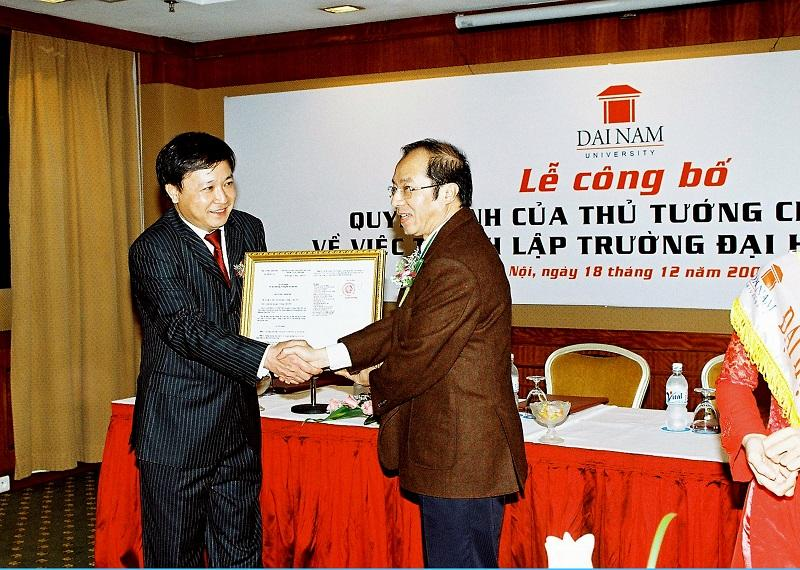
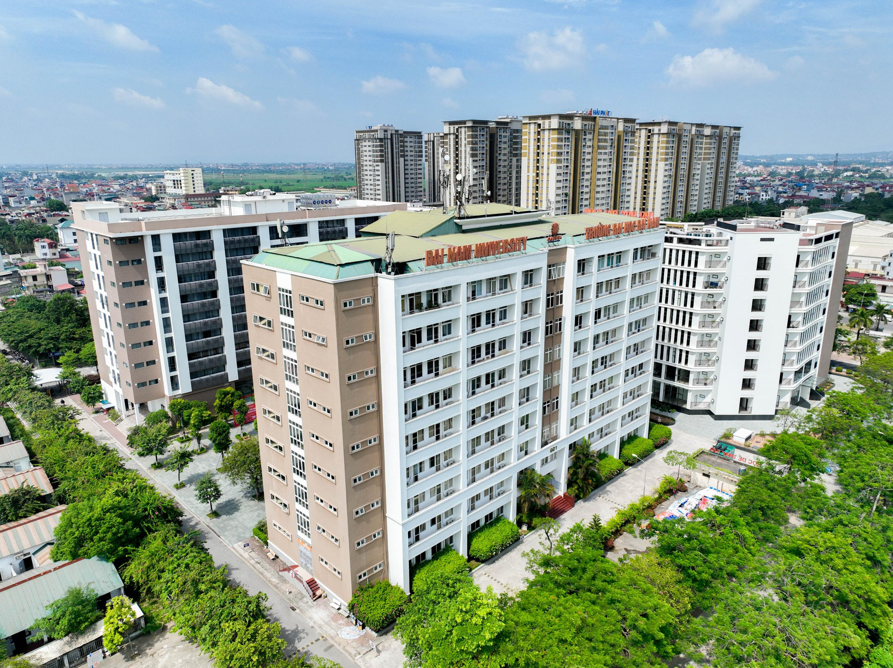
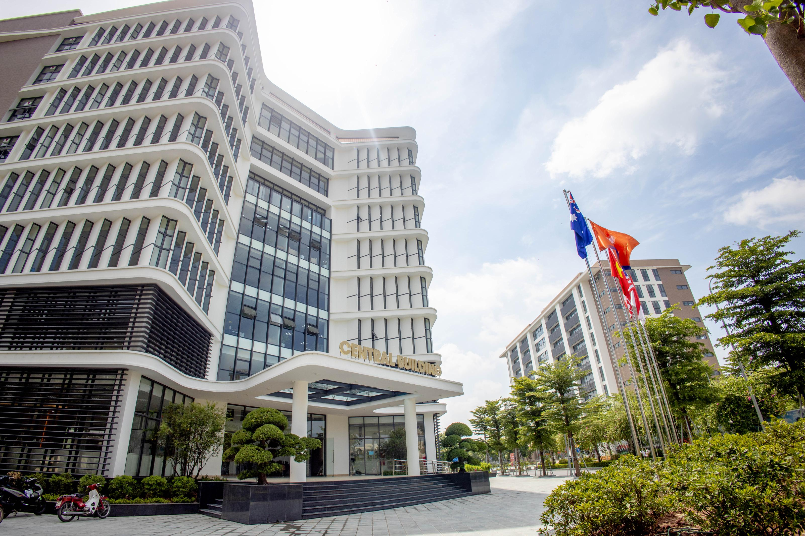
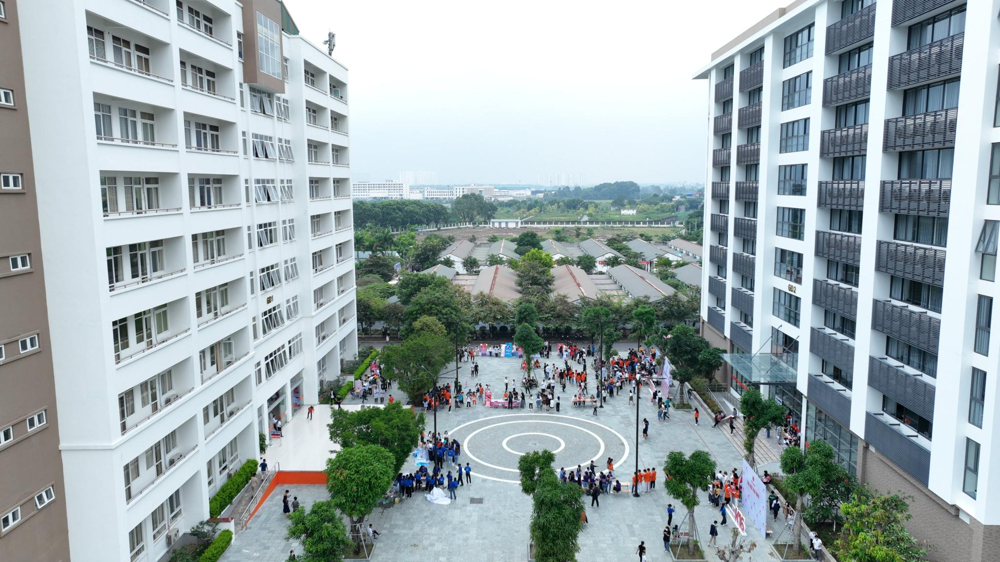

TS. Lê Đắc Sơn – Chủ tịch Hội đồng trường Đại học Đại Nam
DẤU ẤN – NIỀM TỰ HÀO
I. Quá trình thành lập
Cách đây 17 năm, theo Quyết định số 1535/QĐ-TTg ĐHĐN, Thủ tướng Chính phủ đã cho phép Đại học Đại Nam chính thức đi vào hoạt động và tuyển sinh. Từ đó, Trường Đại học Đại Nam lấy ngày 14/11 hàng năm là ngày sinh nhật của mình.

Thứ trưởng Bộ GD&ĐT Bành Tiến Long trao giấy phép thành lập cho chủ tịch HĐQT tại KS Hilton Hà Nội.
Để có ngày đi vào lịch sử của Đại học Đại Nam hôm nay, từ tháng 6/2005, TS. Lê Đắc Sơn (khi đó là TGĐ Ngân hàng VPBank) đã cùng với 12 nhà khoa học bắt tay vào xây dựng đề án thành lập dưới sự bảo trợ của Tổng hội Xây dựng Việt Nam.
Sau 02 năm chuẩn bị các điều kiện để được Thủ tướng Chính phủ cấp phép hoạt động, các nhà sáng lập Đại học Đại Nam đã phải nỗ lực hoàn thành các công việc sau:
- Một là xây dựng đầy đủ các luận chứng khoa học về sự cần thiết ra đời Đại học Đại Nam theo quy hoạch của Chính phủ trong mạng lưới các trường đại học cả nước và đầy đủ luận chứng kinh tế - kĩ thuật các ngành nghề mà nhà trường có chủ trương đào tạo.
- Hai là tập hợp đầy đủ số lượng các giảng viên cơ hữu của các ngành đào tạo với các chức danh, học hàm, học vị của các giảng viên theo qui định của Bộ GD&ĐT.
- Ba là chứng minh khả năng tài chính, cụ thể là huy động đủ 30 tỷ VNĐ nằm trong tài khoản ngân hàng do các nhà sáng lập góp vốn để xây dựng trường. Đây là mức vốn điều lệ tối thiểu nhà nước quy định khi mở mới một trường đại học tại thời điểm đó. Theo quy định hiện nay, vốn điều lệ tối thiểu Chính phủ quy định là 1.000 tỷ VNĐ.
- Bốn, về cơ sở hạ tầng, phải chứng minh đầy đủ thủ tục cấp 10,5 ha đất trong quy hoạch từ chính quyền địa phương (khi đó là UBND tỉnh Hà Tây) để xây dựng quần thể Đại học Đại Nam trong tương lai.
Tháng 06/2007, Hội đồng sáng lập trường đã nộp đầy đủ hồ sơ xin cấp phép lên Bộ GD&ĐT và Văn phòng Chính phủ. Sau gần 06 tháng xem xét, thẩm định hồ sơ, các cơ quan quản lý đã trình Thủ tướng Chính phủ để xin phép thành lập.

Trụ sở của Đại học Đại Nam đặt tại Số 1 Phố Xốm - Phú Lãm - Hà Đông - Hà Nội.


Ngày 14/11/2007, sau gần hai năm rưỡi xây dựng các điều kiện đảm bảo chất lượng đào tạo theo quy định, Đại học Đại Nam đã được Thủ tướng Chính phủ trao Quyết định thành lập, Bộ GD&ĐT trao Quyết định công nhận. TS. Lê Đắc Sơn chính thức trở thành Chủ tịch HĐQT đầu tiên của nhà trường.
Hội đồng Quản trị đầu tiên của Đại học Đại Nam gồm 06 thành viên, được phân công cụ thể như sau:
1 - Ông Lê Đắc Sơn – Chủ tịch
2 - Ông Đỗ Quân - Phó Chủ tịch
3 - Ông Lê Đình Đạo - Phó Chủ tịch
5 - Ông Lê Đắc Lâm - Ủy viên
6 - Ông Phan Ngọc Hiếu - Ủy viên
II. Sứ mệnh và Tầm nhìn của Trường Đại học Đại Nam
2.1 Sứ mệnh
Trường Đại học Đại Nam được thành lập ngày 14/11/2007 theo quyết định 1535/Ttg của Thủ tướng chính phủ nước Cộng hòa xã hội chủ nghĩa Việt Nam. Ngay từ những ngày đầu thành lập, Đại học Đại Nam đã xác định là trường đại học ứng dụng, đào tạo đa ngành nghề.
Sứ mệnh của nhà trường là: "Đào tạo để người học ra trường có cuộc sống tốt và là cÔng dân tốt; góp phần thúc đẩy mạnh mẽ nền giáo dục đại học nước nhà"”".
2.2 Tầm nhìn
"Trở thành sự lựa chọn hàng đầu của người học".Đại học Đại Nam lấy đào tạo về bảo vệ - chăm sóc sức khỏe, gồm các ngành Y khoa, Dược học, Điều dưỡng là trục đào tạo cốt lõi; chú trọng đầu tư phát triển, quốc tế hóa các ngành đào tạo có nhu cầu xã hội cao, như: Công nghệ thông tin, Khoa học máy tính, Quản trị kinh doanh, Kinh doanh quốc tế, Logistics và quản lý chuỗi cung ứng, Thương mại điện tử, Truyền thông đa phương tiện, Quản trị dịch vụ du lịch và lữ hành, Ngôn ngữ Anh, Ngôn ngữ Trung Quốc, Ngôn ngữ Hàn Quốc, Ngôn ngữ Nhật Bản…vv…
Mục tiêu đến năm 2030, trường Đại học Đại Nam trở thành địa chỉ đào tạo tin cậy hàng đầu trong khối các trường đại học tại Việt Nam, để người học lựa chọn theo học ngành nghề mình yêu thích. Về nghiên cứu khoa học và công nghệ, đạt được những thành tựu quan trọng về nghiên cứu và chuyển giao công nghệ trong lĩnh vực Khoa học bảo vệ - chăm sóc sức khỏe cộng đồng.
Đại học Đại Nam đã, đang và sẽ tiếp tục hiện thực hóa Sứ mệnh và Tầm nhìn của mình với triết lý đào tạo “Giáo dục là thắp lửa”, phương châm “Tích lũy niềm tin của xã hội” thông qua “Chất lượng – Minh bạch – Hiệu quả”.
III. Tôn chỉ hoạt động của Đại học Đại Nam
Phát huy tối đa năng lực tiềm ẩn, tính sáng tạo, tự chủ của mọi cá nhân công tác và học tập tại Đại học Đại Nam để:
- Chất lượng đào tạo tốt nhất, phù hợp với học phí của người học.
- Kiến thức được trang bị gắn với có việc làm ngay khi ra trường.
Đào tạo nguồn nhân lực góp phần xây dựng đất nước phồn thịnh không vì mục tiêu lợi nhuận, “Học để thay đổi”, đó là mục tiêu xuyên suốt các hành động của thầy trò Đại học Đại Nam các năm qua và mãi mãi trong tương lai.
Trường Đại học Đại Nam